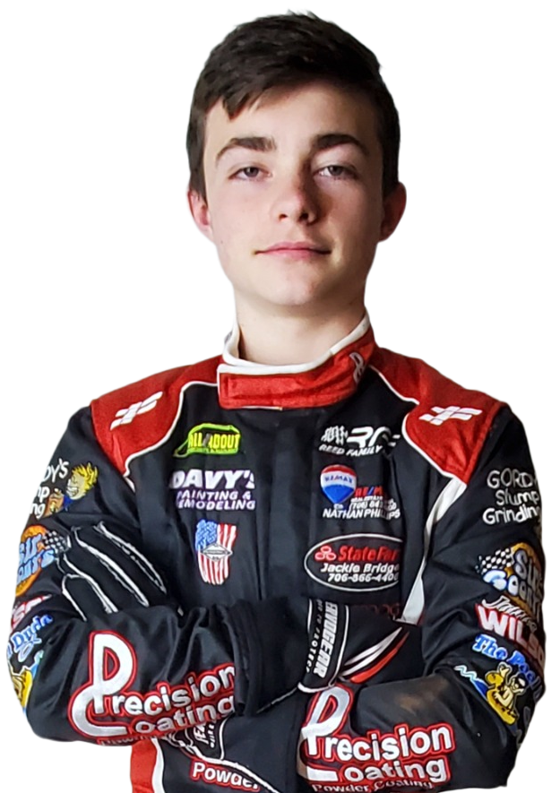

Hometown: Rossville, Georgia
Born: January 13, 2014
Favorite Driver: Kyle Larson
Favorite Movie: Top Gun
Hobbies: Racing, Baseball, Skateboarding
Championships: 0
Total Wins: 20+
Top 3 Finishes: TBA
Logan Conner's journey with Reed Family Racing began long before he ever took the green flag. In 2022, Logan joined the team as a crew member, helping work on the #53 kart driven by TW Reed. While many young racers dream of climbing behind the wheel, Logan spent his first season learning the sport from the other side of the pit wall. Whether helping prepare the kart, working in the shop, or observing race-day strategy, he immersed himself in every aspect of the racing operation and earned the respect of the team through hard work and dedication.
After spending a year learning the ropes and paying his dues, Logan earned the opportunity to become a driver for Reed Family Racing in 2023. The transition from crew member to competitor proved to be a natural fit. During his rookie season, Logan quickly demonstrated both speed and determination, capturing multiple victories while learning the challenges that come with wheel-to-wheel competition. Among the highlights of his first year behind the wheel was a memorable victory in the season-ending 40-lap feature at Sugar Limb Speedway, a race that showcased his ability to perform under pressure and compete with some of the area's top young racers.
Building upon the foundation established during his rookie campaign, Logan entered the 2024 season with confidence and a growing understanding of racecraft. Throughout the year, he continued to develop as a driver, learning when to be aggressive, when to be patient, and how to consistently put himself in position to contend for victories. The results spoke for themselves. Logan collected four feature wins and became a regular fixture at the front of the field. By season's end, he had finished second in the final championship standings at Dawgwood Speedway, establishing himself as one of the premier young racers in the division.
Following two successful seasons in dirt kart racing, Logan embraced a new challenge in 2025 by making the transition to Bandolero racing alongside teammate TW Reed. The move represented a significant step forward in his racing career, introducing a new style of racecar, tougher competition, and a fresh learning curve. As he continues to gain experience and chase victories on asphalt, Logan remains committed to the same work ethic and determination that helped him rise from crew member to race winner. His story is a testament to patience, perseverance, and the belief that success comes to those willing to earn it one lap at a time.